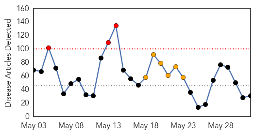
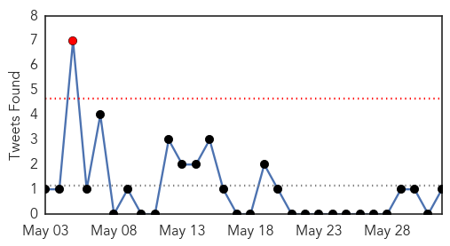

Unknown
30-Day Web Trend
3 alerts, 6 warnings

30-Day Twitter Trend
1 alerts, 0 warnings

Article Locations

Article Confidences

Top Articles:
- 0.996
- Saudi health minister says working with WHO to fight MERS
- 0.993
- First MERS infections detected in Algeria
- 0.989
- Jordan reports sixth MERS death
- 0.972
- Local Health Officials On Watch For MERS
- 0.929
- Travel restrictions on Pakistan by WHO to be enforced from today
- 0.917
- Door County Pulse
- 0.917
- Chicago Tribune
- 0.917
- Chicago Tribune
- 0.917
- Chicago Tribune
- 0.917
- Chicago Tribune
- 0.917
- Chicago Tribune
- 0.917
- Chicago Tribune
- 0.917
- Chicago Tribune
- 0.910
- The world windows to Thailand
- 0.897
- Three dead, 37 admitted as cholera strikes Namayingo
- 0.866
- U.S. soldier freed from captivity in Afghanistan needs to decompress-family
- 0.866
- Philadelphia Inquirer co-owner Katz killed in Massachusetts plane crash
- 0.866
- Taliban detainees released in Bergdahl deal en route to Qatar
- 0.841
- Polio vaccination mandatory for foreign-bound Pakistani travellers from today
- 0.802
- Second bovine TB outbreak confirmed in Cumbria
- 0.748
- Bosnia and Herzegovina Floods: Humanitarian Situation Report - 29 May 2014 - Bosnia and Herzegovina
- 0.692
- Burmese junta stalls aid workers
- 0.669
- Smallpox decision postponed
- 0.648
- Bosnia and Herzegovina: Flood Disaster Situation Report, 1st June 2014 - Bosnia and Herzegovina
- 0.638
- Diarrhea outbreak in Dhiyal VDC - Nepal
- 0.593
- Tattoo health risks: Why you should think before you ink
- 0.541
- UK, France seek to block Juncker from top EU job
- 0.541
- Thousands of police deployed as 'Red Shirts' launch protest
- 0.541
- Several killed in Boko Haram attacks on four Nigerian villages
- 0.541
- Italian priests, Canadian nun freed in Cameroon
- 0.541
- US acted fast to 'save the life' of soldier freed in Afghanistan
Top Tweets:
- 0.673
- Flu in culture: The Flu is a 2013 South Korean disaster film written and directed by Kim Sung-su about an outbreak of a deadly disease...
Cholera
30-Day Web Trend
10 alerts, 5 warnings

30-Day Twitter Trend
4 alerts, 0 warnings
Article Locations

Article Confidences
Top Articles:
-
No articles found for Jun 01, 2014
Top Tweets:
- 0.744
- RT: Cholera outbreak in South Sudan - update from WHO http://t.co/lDHHoKz1HQ cholera